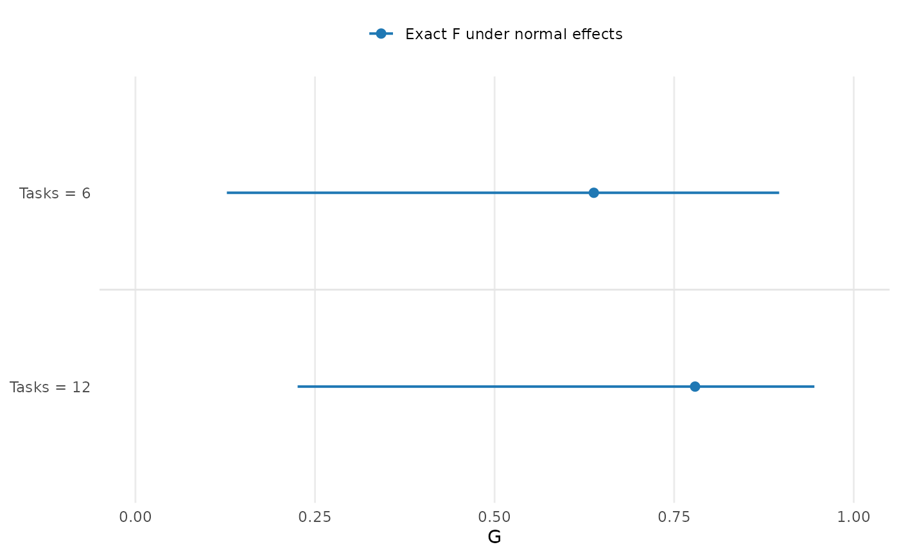

Compare D-study confidence interval methods
Source:R/api-plotting-dstudy-intervals.R
plot.mfrm_dstudy_intervals.RdCompare future plans on one shared coefficient or SEM axis. Each plan has adjacent method rows, distinguished by color, point shape and line type. Method agreement in a single dataset is not evidence of coverage.
Arguments
- x
A result from
confint.mfrm_multivariate_d_study().- draw
Logical;
FALSEreturns the plot data without opening a device.- preset
Package plot style, including
"standard"(color) and"monochrome". Methods also have distinct point shapes.- ncol
Positive integer number of columns for
layout = "panels". Unused by the default combined view.- layout
"combined"(default) groups methods within each plan on one axis, with a common method legend."panels"retains one panel per future plan, with at mostncolcolumns.- ...
Reserved; additional arguments are rejected.
Value
Invisibly, an mfrm_plot_data object retaining the exact table,
unavailable rows, source intervals, design_grid, weights and notes.
Use plot_data() to inspect them and as_ggplot() on the returned object
for an editable plot. No title or explanatory footnote is drawn.
Details
All methods concern the same score/composite, metric and
source data. A filled point has an interval; an open point is an available
estimate without an interval. Unavailable intervals are explicitly labeled
in the combined view, or marked by an asterisk in the panel view, even
if their point estimates are missing. An interval
can exist without an admissible ANOVA/MINQUE point estimate. Missing values
remain missing; no substitute interval or zero is drawn.
The shared axis includes [0,1] for coefficients and [-1,1] for G/Phi
differences, expanding to retain all finite estimates and accepted bounds.
Delta normal-reference bounds outside [0,1] remain visible; they flag
limitations of that approximation, not a larger population parameter space.
SEM and SEM-difference axes instead span the estimates and intervals in
score units, including zero. Negative SEM differences favor the comparison
plan. An SEM interval is uncertainty in measurement error, not an interval
for a Person's score. Chi-square and MLS labels retain the calculation
used for each plan; their assumptions and coverage claims differ.
Method limitations, confidence level, normal-effect assumptions and
negative components remain in the returned notes and source object.
Plotting neither refits a model nor recalculates an interval. Save the
complete interval or plot object with saveRDS() for later use.
Nested plan labels show child counts per parent, rather than total child
pool sizes; the reference plan uses the same count convention.
A mean-square-region difference is a conservative enclosure from shared
source uncertainty, not a tight joint image or a paired-delta interval.
Its returned source retains the individual projections and reference.
REML profile and residual-contrast rows retain the original source points;
the separate IntervalCenter and method diagnostics are available in the source
interval object. A point can lie outside this separately calculated interval.
For GENOVA-adjusted results, points use the selected component treatment;
intervals retain their original-source population basis. IntervalEstimate
and IntervalBasis in the source table distinguish them. Drawing the two
together does not make the original sampling SE an adjusted-estimator SE.
Unresolved numerical candidates are retained in the source object but
are not drawn as accepted confidence bounds.
For score and MLS intervals, an empty confidence set is labeled
"Empty set"; it is distinct from an estimated coefficient of zero.
MLS rows with FormulaComplete = FALSE retain candidate values where
a squared width is undefined. Their conservative bounds are drawn, while
the saved interval object and notes retain the reason and affected ranges.
Session plot defaults
Set options(mfrmr.plot_preset = "publication") to choose a session default
for plotting functions that expose the common preset argument. The
supported values are "standard", "publication", "compact" and
"monochrome". Precedence is an explicit call argument, then the session
option, then "standard". For example, preset = "standard" overrides
a session set to "monochrome". Explicit preset = NULL retains the
earlier package-default behavior; it does not read the session option.
Invalid session values cause an error only when that option is needed.
The category-curve, data-quality, fit-review, connectivity and network
routes of plot() for report bundles use the same option through ....
Plots without a common preset argument, including extended-model plots
with their own palette controls, keep their own settings. This option
selects a preset, not a universal theme or a guarantee that all renderers
implement every appearance control identically.
New plot payloads retain the resolved preset for supported saved-data
rendering. Converting an existing payload with as_ggplot() uses its saved
appearance, even after the session option changes. A call that creates a
new plot from a fit or statistical result uses the current default.
For a reproducible script, supply preset explicitly or set the option in
that script. Saving only the fitted model does not save a session option.
No global ggplot theme is changed.
Restore previous settings with old <- options(mfrmr.plot_preset = "monochrome") followed by options(old). Use
options(mfrmr.plot_preset = NULL) to remove the option. The preset changes
appearance, not estimates, confidence levels or diagnostic thresholds.
Examples
tasks <- read.csv(system.file("extdata", "mgenova-table12.csv", package = "mfrmr"))
g <- mfrm_g_study(tasks, c("V", "W"), rater = NULL)
d <- mfrm_d_study(g, data.frame(Tasks = c(6, 12)))
ci <- confint(d, assumption = "normal")
p <- plot(ci, draw = FALSE)
plot_data(p, "notes")
#> Type
#> 1 Interpretation
#> 2 Interpretation
#> 3 Interpretation
#> 4 Interpretation
#> 5 Interpretation
#> 6 Interpretation
#> 7 Interpretation
#> Text
#> 1 Exact F coverage requires the balanced independent normal-effects model and positive residual variance. It is not distribution robust.
#> 2 Intervals describe population G for each future count, using uncertainty and degrees of freedom from the source study. They are not Person-rank, pass/fail, Phi or plan-difference intervals.
#> 3 All counts for this score use the same ratio interval. Do not treat rows as independent or infer a difference from interval overlap.
#> 4 Intersect the mean-square expectation-ratio interval with R >= 1 before transforming to G. An empty intersection is not zero uncertainty. RawRatioLower/Upper are ratio endpoints, not G endpoints.
#> 5 PointStatus and Status describe separate outputs. A positive-width ratio interval that rounds to identical G endpoints is unavailable on that scale; retained log-ratio bounds may still resolve plan differences. If the base log-ratio width itself rounds away, neither interval is available. SaveRDS() retains fixed weights, assumptions and source context.
#> 6 95% intervals; metric: G; score: V.
#> 7 Filled points: estimates with intervals. Open points: estimates without intervals. Unavailable intervals are labeled in the combined view or marked * in panels; missing estimates are never placed at zero. Inspect unavailable rows for reasons.
if (requireNamespace("ggplot2", quietly = TRUE)) as_ggplot(p)
